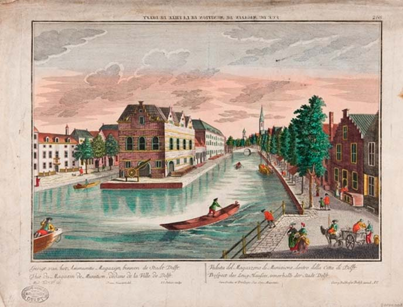

TU Delft Library
Trésor
In het Trésor wordt de bijzondere collectie van de TU Delft Library bewaard. Tot de bijzondere collectie wordt gerekend: alle boeken van vóór 1900. De collectie bestaat uit boeken, atlassen, kaarten, tijdschriften, prenten en foto's. De kern van de collectie bestaat uit technisch-wetenschappelijke literatuur in het bijzonder op het gebied van architectuur, mijnbouwkunde en weg- en waterbouwkunde.
Documenten die te maken hebben met de geschiedenis van de TU Delft worden ook tot de bijzondere collectie gerekend. In het Trésor vindt u daarom ook recente redevoeringen, collegedictaten en dissertaties.
Ook wordt het Trésor verrast door mensen die boeken aanbieden. Soms zijn dat hele bijzondere aanwinsten, maar ook boeken die minder interessant lijken kunnen voor ons belangrijk zijn. Onlangs zijn wij in het bezit gekomen van de inschrijvingsboeken van de studenten vanaf de oprichting van de Koninklijke Akademie in 1842 (de voorloper van de TU Delft) tot begin 20e eeuw.
Met behulp van onderstaande links kunt u de collectie raadplegen.
